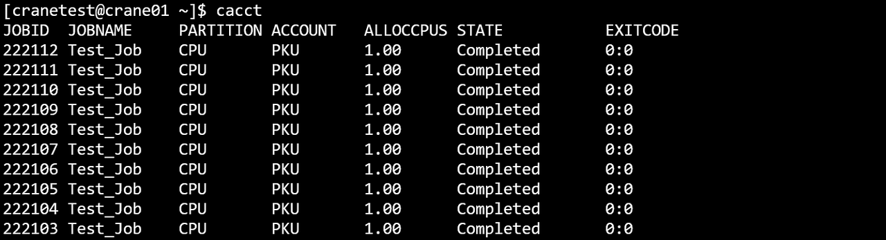
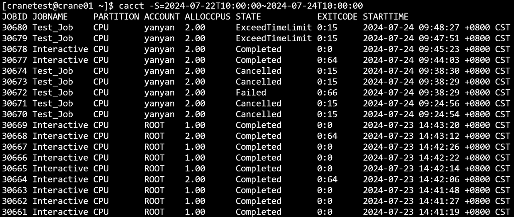
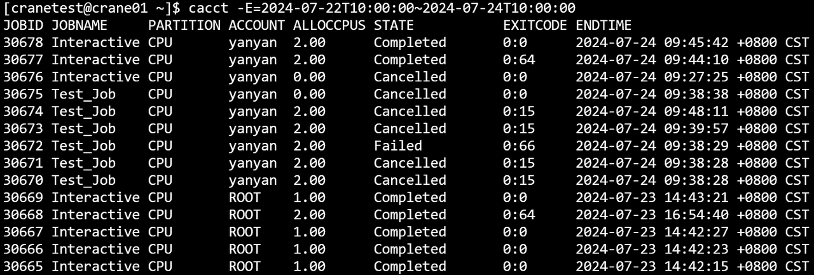
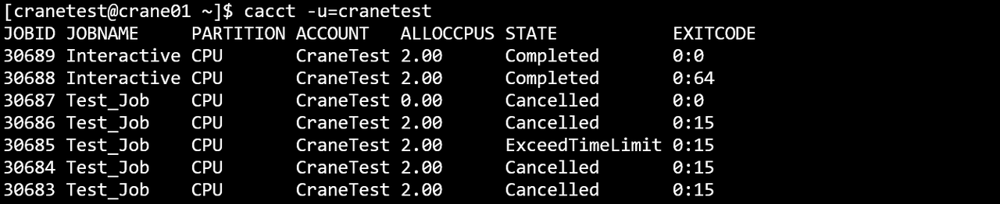

cacct 查看作业信息
cacct可以查看队列中的作业信息。
查看集群中所有队列的作业信息（包括所有状态），默认输出100条信息。
cacct
cacct运行结果展示 
主要输出项
- TaskId：作业号
- TaskName: 作业名
- Partition：作业所在分区
- Account：作业所属账户
- AllocCPUs：作业分配的CPU数量
- State：作业状态
- ExitCode：作业状态码
主要参数
- --MaxVisibleLines/-m：指定输出结果的最大条数。如-m=500表示最多输出500行查询结果
- -A/--account string：指定查询作业的所属账户，指定多个账户时用逗号隔开。
- -C/--config string：配置文件路径(默认为 "/etc/crane/config.yaml")
- -E/--endtime string：指定查询该时间之前结束的作业，例：cacct -E=2023-03-14T10:00:00
- -o/--format string：以指定格式输出结果表，可以指定输出指定列以及列宽。
- --help/-h: 显示帮助
- -j/ --job string：指定查询作业号，指定多个作业号时用逗号隔开。如 -j=2,3,4
- -n/ --name string：指定查询作业名，指定多个作业名时用逗号隔开。
- --noHeader/-N：输出隐藏表头
- -S/--startime string：指定查询该时间之后开始的作业，例：cacct -S=2023-03-14T10:00:00
- -u/--user string：指定查询作业的所属用户，指定多个用户时用逗号隔开。
- 例
cacctcacct -h
cacct -N
cacct -S=2023-03-14T10:00:00
cacct -E=2023-05-07T10:00:00cacct -j=25,24,23
cacct -u=rootcacct -A=ROOT
cacct -m=10
cacct -o="TaskId,TaskName%30,Partition,Account,State"
- 例